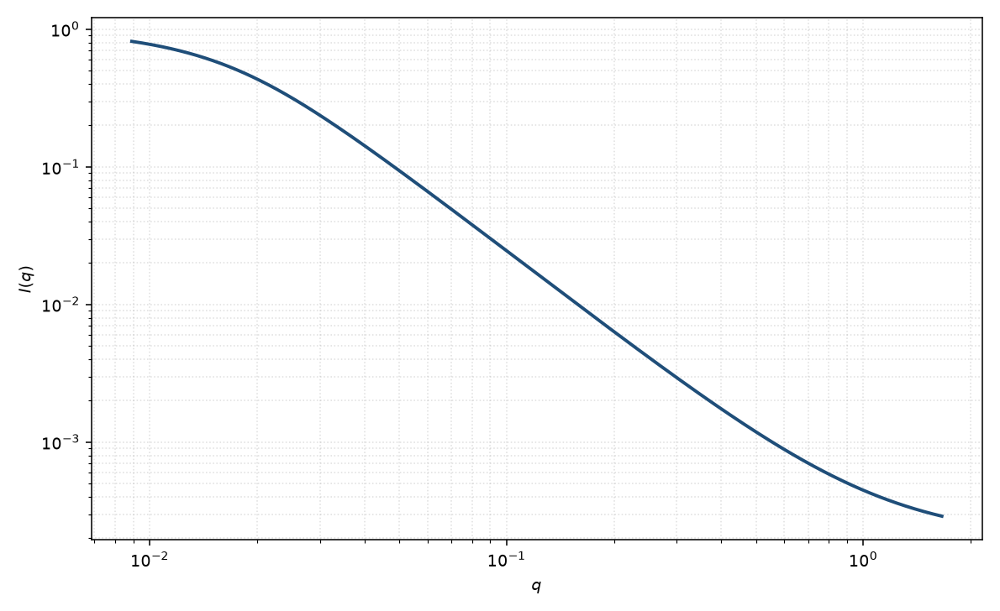

单分散高斯链
monodisperse Gaussian coil
适用场景
理想链、$\theta$ 溶剂中的线形高分子，且分子量分布很窄时，用 Debye 单分散高斯链。低 $q$ 给出 $R_g$，高 $q$ 趋近 $q^{-2}$。
明显多分散用 Zimm 多分散 Debye。良溶剂排除体积使高 $q$ 接近 $q^{-1/\nu}$（$\nu\approx 0.588$），应改用排除体积链。半柔性棒段明显时用柔性圆柱。
物理图像
高斯链的成对距离是高斯分布。对链段对积分得到 Debye 函数。记 $x=q^2 R_g^2$，内层 $D(x)=(e^{-x}-1+x)/x^2$，归一化形式因子 $P(x)=2D(x)$，从而 $P(0)=1$。
取向已在各向同性链构象平均里。磁性标记若只在链的一段上，有效 $R_g$ 不是整链的 $R_g$。
示意图

核心公式
出发点
理想高斯链：相隔 $n$ 个单体的两端距是高斯分布，$\langle R_n^2\rangle=nb^2$。形式因子是所有链段对相位因子的构象平均，不假定整体为球或棒。
推导
高斯平均 $\langle\mathrm{e}^{i\mathbf{q}\cdot\mathbf{R}_n}\rangle=\exp(-q^2 nb^2/6)$。对 $N$ 个单体双求和并换成积分。令 $u=\lvert i-j\rvert/N$，$x=q^2 R_g^2$，且 $R_g^2=Nb^2/6$：
$$P(q)=\frac{1}{N^2}\sum_{i,j}\mathrm{e}^{-q^2\lvert i-j\rvert b^2/6}=2\int_0^1(1-u)\,\mathrm{e}^{-xu}\,\mathrm{d}u.$$积分：$\int_0^1\mathrm{e}^{-xu}\,\mathrm{d}u=(1-\mathrm{e}^{-x})/x$，$\int_0^1 u\mathrm{e}^{-xu}\,\mathrm{d}u=(1-\mathrm{e}^{-x}(x+1))/x^2$。整理得 Debye 函数
$$D(x)=\frac{\mathrm{e}^{-x}-1+x}{x^2},\qquad P(q)=2D(x),\qquad x=q^2 R_g^2.$$$x\to 0$ 时 $D\to 1/2$，故 $P(0)=1$。观测 $I(q)=I(0)\,P(q)+B$。
低 $q$ 与渐近
Taylor：$\mathrm{e}^{-x}=1-x+x^2/2-x^3/6+\cdots$，代入 $D=(x^2/2-x^3/6+\cdots)/x^2=1/2-x/6+\cdots$，故 $P=1-x/3+O(x^2)=1-q^2 R_g^2/3+\cdots$，即 Guinier。高 $q$（$x\gg 1$）：$D\sim 1/x$，故 $P\sim 2/(q^2 R_g^2)$，即 $q^{-2}$。Kratky 图 $q^2 I(q)$ 趋向平台 $2I(0)/R_g^2$。
参数表
| 参数 | 符号 | 含义 | 单位 | 典型范围 |
|---|---|---|---|---|
| 回转半径 | $R_g$ | 整链回转半径 | Å | 20–500 Å |
| 前向散射 | $I(0)$ | 与数密度、分子量、衬度有关 | 与强度单位一致 | 绝对标定可给 $M_w$ |
| 标度 / 本底 | $\mathrm{scale}$, $B$ | 前置因子与常数本底 | 与强度单位一致 | 实验相关 |
拟合注意
取向：各向同性溶液不必引入取向角。流动取向的链应改用各向异性 $R_g$ 或弹性网络模型。
多分散把 Kratky 平台抬高并改变低 $q$ 曲率，应改用多分散页。磁性标记链的对比匹配会改变有效 $R_g$。
可辨识性：只看到 Guinier 时 Debye 与球无法分辨。需要看到 $q^{-2}$ 区。本底会伪装成排除体积（更陡的尾）。
相近模型
参考文献
- Debye, P. Molecular-weight determination by light scattering. J. Phys. Colloid Chem. 1947, 51, 18–32. DOI: 10.1021/j150451a002
- Guinier, A.; Fournet, G. Small-Angle Scattering of X-rays. Wiley: New York, 1955.